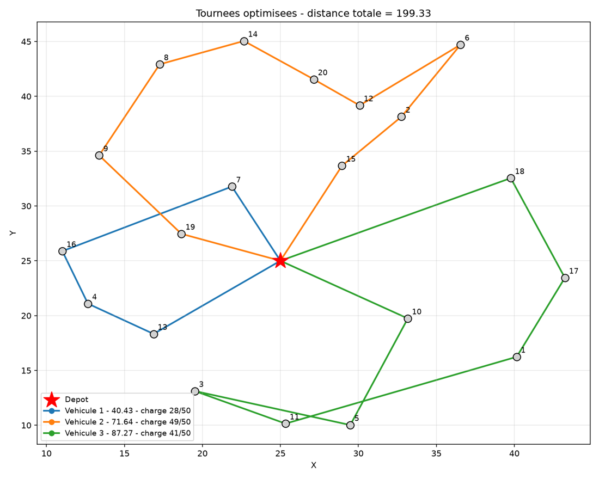

Tournées de véhicules (VRP) : optimisation avec OR-Tools et automatisation avec n8n
Le problème
Un dépôt doit servir 20 clients avec 3 véhicules de capacité 50. Chaque client a une demande, un temps de service, une fenêtre de temps (par exemple 8h–12h) et une priorité de 1 à 3. L’objectif : servir tous les clients en minimisant la distance totale, sans dépasser la capacité des véhicules ni les fenêtres de temps. C’est un problème de tournées avec fenêtres de temps (VRPTW).
Le workflow n8n
L’optimisation, le rapport et l’envoi par e-mail s’enchaînent automatiquement en un clic dans n8n, installé en local :
- Déclencheur manuelLance le workflow.
- Execute CommandExécute
vrp_app.pyet récupère le résultat en JSON. - Code JavaScriptLit le JSON et construit le rapport HTML : résumé et itinéraire de chaque véhicule.
- Read/Write FilesCharge la carte des tournées (
tournees.png). - GmailEnvoie le rapport avec la carte en pièce jointe.
Pour que n8n puisse piloter le programme, j’ai donné au script Python une interface en ligne de commande : --no-prompt (aucune question posée), --json (résultat structuré sur la sortie standard) et --output-dir (dossier de sortie). Les graphiques sont produits sans écran, ce qui permet de les générer depuis un workflow.
Télécharger le workflow n8n (JSON). Pour l’utiliser : dans n8n, menu Import from file, puis adapter le chemin du script, le compte Gmail et l’adresse du destinataire.
Modélisation avec OR-Tools
- Coût : distance entre les points, à minimiser.
- Capacité : chaque véhicule transporte au maximum 50 unités.
- Temps : durée du trajet et temps de service de chaque client, avec une fenêtre de temps à respecter.
- Priorités : un client non servi coûte très cher (pénalité plus forte pour les priorités élevées), et les clients urgents sont encouragés à être servis plus tôt.
- Recherche : solution initiale par le chemin le plus court, puis amélioration par recherche locale guidée, limitée à 10 secondes.
Résultats
Tous les clients sont servis, avec 199,33 de distance totale. Les capacités et les fenêtres de temps sont respectées pour les trois véhicules.
| Véhicule | Clients servis | Distance | Charge |
|---|---|---|---|
| 1 | 5 | 40,43 | 28 / 50 |
| 2 | 9 | 71,64 | 49 / 50 |
| 3 | 7 | 87,27 | 41 / 50 |

Autres versions du projet
- Une version 100 % Python (
envoyer_rapport.py) qui réalise la même chaîne avec la bibliothèquesmtplib, sans n8n. - Une application web (
app.py) avec Streamlit pour saisir les paramètres et visualiser les tournées.
Limites et suite possible
Les données sont fictives et les distances sont à vol d’oiseau, pas par la route. Le workflow se lance à la main, avec un chemin de fichier propre à mon ordinateur. Les prochaines étapes : un déclencheur planifié ou un webhook, la lecture des clients depuis une feuille Google Sheets, et des distances routières réelles.